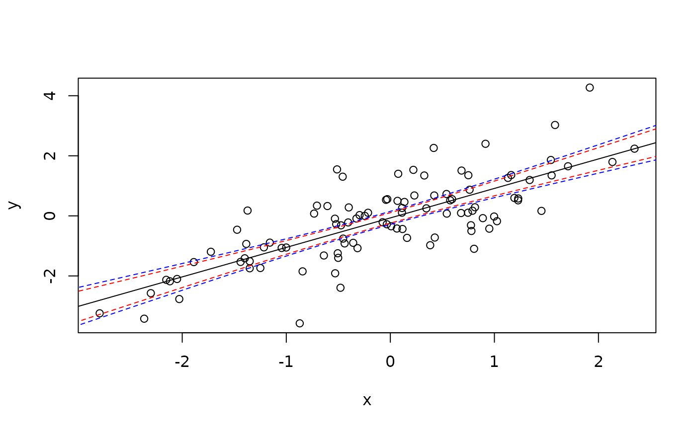

Function to compute the Scheffe corrected confidence interval for the regression line
scheffe(model, newdata = model.frame(model), level = 0.95)
| model | Linear model |
|---|---|
| newdata | new data frame |
| level | confidence level (0.95) |
abline(l)d0 <- data.frame(x=seq(-5,5,length.out=100)) d1 <- cbind(d0,predict(l,newdata=d0,interval="confidence")) d2 <- cbind(d0,scheffe(l,d0)) lines(lwr~x,d1,lty=2,col="red")